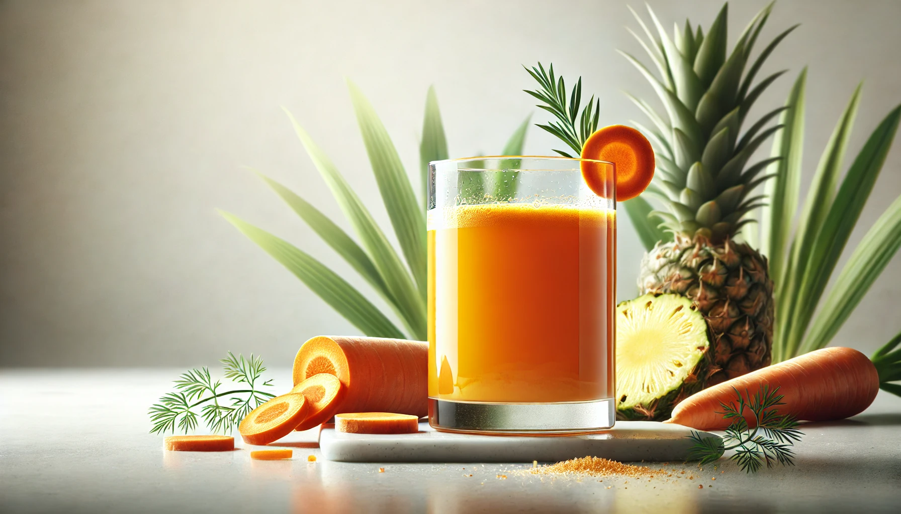

10 Healthy Juice Recipes for Toddlers
Introduction
Homemade juices are a fun and nutritious way to keep your toddler hydrated! These gentle blends use fresh fruits and veggies, no added sugar, and are full of vitamins to support growth and immunity. Each recipe is designed to be light, easy to digest, and toddler-approved.
Tip: Always dilute juice with a little water for toddlers under 2 years old, and serve it fresh or within 24 hours!
Juice Recipe
Apple Carrot Delight
A naturally sweet and vibrant juice packed with Vitamin A for healthy eyes and skin.
Ingredients
1 medium apple (peeled and chopped)
1 small carrot (peeled and chopped)
½ cup water
Instructions
1. Blend apple and carrot with water until smooth.
2. Strain if needed for a smoother texture.
3. Serve slightly chilled or at room temperature.
Juice Recipe
Watermelon Cooler
Refreshing and hydrating - perfect for hot days!
Ingredients
1 cup watermelon cubes (seedless)
A few mint leaves (optional)
Instructions
1. Blend watermelon and mint until smooth.
2. Strain if desired.
3. Serve immediately for the best flavor.
Juice Recipe
Banana Orange Boost
A creamy, tangy mix rich in Vitamin C and potassium.
Ingredients
1 ripe banana
1 small orange (peeled and seeds removed)
¼ cup water
Instructions
1. Blend banana, orange, and water until silky.
2. Serve fresh - do not store, as banana oxidizes quickly.
Juice Recipe
Pear & Spinach Green Juice
A mild, nutrient-rich green juice with a naturally sweet taste toddlers love.
Ingredients
1 ripe pear (peeled and chopped)
A small handful of baby spinach
½ cup water
Instructions
1. Blend all ingredients until smooth.
2. Strain gently and serve.
Juice Recipe
Mango Pineapple Sunshine
A tropical vitamin bomb that supports immunity and digestion.
Ingredients
½ cup ripe mango cubes
½ cup pineapple cubes
¼ cup water
Instructions
1. Blend all ingredients together until smooth.
2. Strain if needed and serve cool.
Juice Recipe
Cucumber Apple Refresher
Hydrating and gentle on the tummy - great for summer mornings.
Ingredients
½ cucumber (peeled and chopped)
1 small apple
½ cup water
Instructions
1. Blend ingredients until smooth.
2. Strain and serve chilled.
Juice Recipe
Strawberry Melon Mix
Sweet, fruity, and full of antioxidants - perfect for picky drinkers!
Ingredients
½ cup watermelon cubes
4 strawberries (hulled)
¼ cup water
Instructions
1. Blend all ingredients together.
2. Strain if needed for smoother texture.
Juice Recipe
Papaya Orange Glow
A creamy, digestion-friendly juice that’s great for boosting Vitamin C and A.
Ingredients
½ cup ripe papaya cubes
½ small orange (peeled)
¼ cup water
Instructions
1. Blend all ingredients until creamy.
2. Serve fresh - no need to strain.
Juice Recipe
Grape & Apple Fun Mix
A naturally sweet antioxidant-rich juice toddlers can’t resist.
Ingredients
½ cup seedless grapes
½ small apple
¼ cup water
Instructions
1. Blend grapes, apple, and water until smooth.
2. Strain and serve cold.

Juice Recipe
Tropical Carrot Splash
A vibrant orange drink with beta-carotene and tropical sweetness.
Ingredients
½ cup pineapple cubes
½ small carrot (peeled and chopped)
½ cup orange juice (freshly squeezed)
Instructions
1. Blend all ingredients until smooth.
2. Strain lightly and serve chilled.
Toddler Juice Tips
➛ Always use fresh produce and avoid added sugar or salt.
➛ Dilute juices with water (1:1 ratio) for younger toddlers.
➛ Serve no more than ½ cup (120 ml) per day.
➛ Store leftovers in the fridge for up to 24 hours in a sealed container.
☛ More Recipes